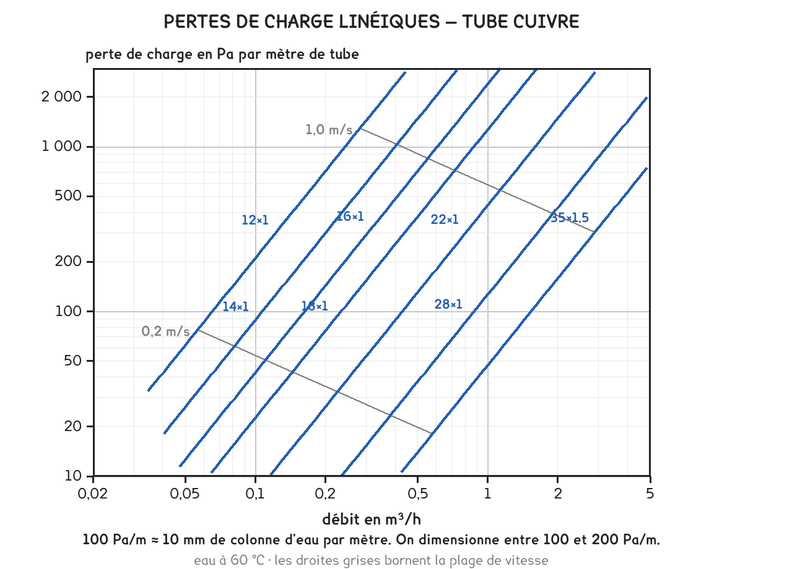

BTS FED option C · 2e année
Faire circuler de l'eau coûte de la pression. Reste à savoir combien, et c'est ce nombre qui décide du circulateur.
1 outil · 8 questions · 9 replis · 1 figure
Savoirs travaillés
L’eau frotte contre la paroi du tube. Cette friction lui prend de la pression, et c’est le circulateur qui doit la lui rendre. Deux causes se cumulent.
Les pertes linéiques viennent du tube droit. Elles s’expriment en pascals par mètre et dépendent du débit, du diamètre et de la rugosité. On les lit sur un abaque, ou on les calcule.
Les pertes singulières viennent de tout ce qui n’est pas droit : coudes, tés, vannes, robinets, émetteurs. Plutôt que de les traiter une par une, on les convertit en longueur équivalente, la longueur de tube droit qui coûterait autant.

Δp = j × (L + Léq)
On additionne d’abord toutes les longueurs, puis on multiplie une seule fois par j. Multiplier chaque singularité séparément revient au même, mais fait perdre du temps et multiplie les occasions de se tromper.
Les graduations ne sont pas régulières : entre 1 et 10 il y a la même distance qu’entre 10 et 100. C’est ce qui permet de lire sur un même graphique des débits de 0,05 et de 5 m³/h.
Deux droites obliques traversent l’abaque : ce sont les iso-vitesses. Elles permettent de vérifier le second critère sans calcul (la vitesse) pendant qu’on lit le premier.
Un tronçon se valide sur deux critères, pas un : la vitesse sous 1 m/s en habitation, et la perte linéique sous 200 Pa/m environ. Un tube peut satisfaire l’un et pas l’autre.
L’abaque du polycopié couvre le cuivre courant. L’outil ci-dessous calcule la même chose, pour n’importe quel diamètre, par la formule de Blasius, celle qui vaut pour un tube lisse et un écoulement turbulent, c’est-à-dire tout le chauffage.
Faites varier le diamètre : le débit ne change pas, mais la vitesse et la perte linéique s’effondrent dès qu’on monte d’un calibre. Faites varier le nombre de robinets thermostatiques : leur longueur équivalente pèse souvent plus lourd que tout le tube droit du circuit.
À observer en entreprise
Sur une installation de l’entreprise, relever la plaque signalétique du circulateur : marque, modèle, hauteur manométrique et débit nominal. Photographier la courbe caractéristique si elle figure sur le corps de pompe.
Compter, sur un tronçon accessible, le nombre de coudes, de tés et de vannes entre le générateur et un émetteur. Estimer la longueur droite.
Pour aller plus loin
La perte linéique s’écrit toujours de la même façon, quel que soit le fluide :
j = λ × ρ v² / (2 d)
où λ est le coefficient de perte de charge, sans unité, ρ la masse volumique, v la vitesse et d le diamètre intérieur. Toute la difficulté tient dans λ, qui dépend du régime d’écoulement.
Ce régime se caractérise par le nombre de Reynolds :
Re = v × d / ν
avec ν la viscosité cinématique, 0,474 × 10⁻⁶ m²/s pour l’eau à 60 °C.
Elle est valable jusqu’à Re ≈ 100 000, ce qui couvre tous les débits d’une installation de bâtiment. Au-delà, ou pour de l’acier rouillé, il faut passer par le diagramme de Moody.
C’est cette formule qu’utilise l’outil de cette page. L’abaque du polycopié en est le tracé, pour quelques diamètres.
Ce seuil n’est pas une loi de la physique : c’est un compromis économique.
Descendre en dessous demande de gros tubes : plus de cuivre, plus de calorifuge, plus de main-d’œuvre, et un investissement qui grimpe vite. Monter au-dessus donne un réseau bon marché mais un circulateur puissant, qui consomme toute l’année et fait du bruit.
L’optimum se situe entre 100 et 250 Pa/m pour un réseau de bâtiment. On retient 200 comme repère. Sur de très longues distances (un réseau de chaleur urbain) on descend vers 50 à 100 Pa/m, parce que la longueur multiplie tout.
Le second critère, la vitesse, n’est pas économique mais acoustique : au-delà d’environ 1 m/s en habitation, 1,5 en tertiaire, le réseau devient audible. Et sur un réseau ancien, une vitesse trop forte décolle les dépôts et les envoie boucher les corps de chauffe.
Un réseau réel ne comporte pas un circuit mais des dizaines, en parallèle. Le circulateur ne peut fournir qu’une seule hauteur manométrique, la même pour tous.
Le bureau d’études calcule donc les pertes de charge de chaque branche, et retient la plus élevée : c’est le tronçon le plus défavorisé, presque toujours celui de l’émetteur le plus éloigné. La pompe est dimensionnée sur lui.
Conséquence : toutes les autres branches reçoivent plus de pression qu’il ne leur en faut, et prendraient trop de débit. C’est exactement le problème de la séance 7, et c’est ce que l’équilibrage vient corriger, en ajoutant, à chaque branche favorisée, la résistance qui lui manque pour être aussi défavorisée que la pire.
Équilibrer un réseau, c’est donc dégrader volontairement toutes les branches sauf une.
La perte de charge d’un circuit ne se résume pas au tube. Voici le bilan complet du tronçon de la séance 7 : 24 kW en 70/50, DN 25, Q = 1,03 m³/h, j = 160 Pa/m, avec 18 mètres aller et 18 mètres retour.
| Poste | Détail | Perte |
|---|---|---|
| Tube droit | 36 m × 160 Pa/m | 5 760 Pa |
| Singularités | 10 m équivalents × 160 Pa/m | 1 610 Pa |
| Générateur | donné par le constructeur | 8 000 Pa |
| Émetteurs et vannes | donné par le constructeur | 10 000 Pa |
| Total | 25 400 Pa = 2,6 mCE |
Le tube et ses coudes ne font que 29 % du total. Les organes, générateur, émetteurs, vannes, font les 71 % restants, et leurs pertes ne se calculent pas : elles se lisent dans la documentation. Un candidat qui ne fait que le tube trouve un circulateur trois fois trop petit.
Où trouver ces valeurs à l’épreuve. Elles sont au dossier technique, dans la fiche du constructeur, sous les noms perte de charge, Δp ou résistance hydraulique, souvent en mCE ou en kPa. Le sujet ne demande jamais de les inventer, il demande de les trouver et de les additionner. C’est de l’extraction d’information, la compétence qui pèse 40 % de l’épreuve.
Trois conversions à savoir de tête, parce que les documents mélangent les unités :
Et ensuite ? Ces 2,6 mCE sont la hauteur manométrique que le circulateur doit fournir au débit de 1,03 m³/h. Ce couple (un débit et une hauteur) est le point que la séance 9 va chercher sur la courbe du circulateur.
On ne les invente pas, et on ne les apprend pas par cœur non plus. Elles viennent d’un coefficient sans dimension, le ζ (zêta), propre à chaque singularité, que les constructeurs publient.
L équivalente = ζ × d / λ
Sur notre DN 25, d / λ = 0,025 / 0,0239 ≈ 1,05 m. Une longueur équivalente y vaut donc à peu près ζ mètres, la coïncidence est propre à ce diamètre, elle ne se généralise pas.
Les ordres de grandeur qu’il faut reconnaître, et non retenir au chiffre près :
| Singularité | ζ typique | Ce que ça dit |
|---|---|---|
| Vanne d’arrêt grande ouverte | 0,2 | négligeable, et c’est voulu |
| Té, passage direct | 0,3 | le fluide continue tout droit |
| Coude 90° | 0,5 à 1,0 | dépend du rayon de courbure |
| Té, passage en dérivation | 1,5 | tourner coûte cinq fois plus que continuer |
| Clapet anti-retour | 2,5 | un organe cher en pression |
| Robinet thermostatique | 8 à 10 | à lui seul, dix mètres de tube |
Ce que ce tableau apprend, et c’est le vrai contenu de la séance : un coude ne pèse presque rien, un organe de réglage pèse énormément. Sur un circuit de radiateurs, les robinets thermostatiques dominent le bilan, c’est normal, et c’est même leur fonction : freiner.
Un ζ ne se convertit en mètres qu’au diamètre du tronçon où il se trouve. Le même coude vaut 1 m en DN 25 et 1,6 m en DN 40. Convertir tous les ζ d’un circuit avec un seul diamètre est une erreur courante et invisible.
L’abaque du polycopié est un outil de terrain, et il se lit dans un ordre précis. Trois erreurs reviennent à chaque séance.
Entrer par le débit, sortir par le tube. On place le débit sur l’axe horizontal, on monte jusqu’à la courbe du tube envisagé, on lit la perte linéique à gauche. Puis (et seulement puis) on regarde où l’on se trouve par rapport aux droites obliques d’iso-vitesse. Deux lectures, deux critères, un seul geste.
Le tube n’est pas désigné par son diamètre intérieur. Un cuivre s’écrit 18 × 1 : 18 mm de diamètre extérieur, 1 mm d’épaisseur, donc 16 mm intérieur. C’est l’intérieur qui compte dans tous les calculs. Un acier s’écrit en DN, qui est une désignation nominale et non une cote : un DN 20 en acier n’a pas exactement 20 mm intérieurs.
L’abaque vaut pour un matériau et une température. Celui du polycopié est établi pour le cuivre, à une température d’eau donnée. Le multicouche et le PER ont des rugosités et des sections différentes, et l’eau chaude est moins visqueuse que l’eau froide. Un écart de quelques pour cent, sans conséquence en avant-projet, mais ça explique pourquoi l’outil de calcul et l’abaque ne donnent jamais exactement le même nombre.
L’écart entre l’abaque et l’outil n’est pas une erreur de l’un des deux. À l’épreuve, on lit l’abaque fourni, et on ne recalcule pas : le corrigé attend la valeur lue, avec la tolérance de lecture.
La formule de Blasius vaut pour un tube lisse en régime turbulent. C’est le cas de tout le chauffage neuf, et c’est pour ça qu’elle suffit ici. Elle cesse de valoir dans deux situations que rencontre un exploitant.
Le tube rugueux. Un acier galvanisé vieilli, un tube entartré, un réseau chargé de boues n’est plus lisse : sa rugosité relative ε/d devient sensible, et le coefficient de frottement λ ne dépend plus seulement de Reynolds. Il faut alors le diagramme de Moody, ou la formule de Colebrook dont il est le tracé.
Concrètement, un réseau ancien peut voir sa perte linéique doubler par rapport au calcul neuf. Un circulateur dimensionné juste devient insuffisant au bout de quinze ans, non parce qu’il a faibli, mais parce que le réseau a durci. C’est un diagnostic classique en rénovation.
Le régime laminaire. Sous Re ≈ 2 000, l’écoulement n’est plus turbulent et λ = 64 / Re. On y tombe dans les très petits débits, un plancher chauffant en mi-saison, une boucle d’ECS bouclée. L’outil du kit bascule automatiquement, mais l’abaque du polycopié, lui, n’y descend pas.
Re = v × d / ν
Sur notre tronçon : Re ≈ 31 000. Franchement turbulent, Blasius s’applique.
Pourquoi la viscosité compte. L’eau à 10 °C est trois fois plus visqueuse qu’à 80 °C. Un même circuit perd donc plus en eau glacée qu’en chauffage, et c’est une des raisons pour lesquelles on ne dimensionne pas un réseau de froid avec l’abaque du chaud.
Une pompe n’aspire pas : elle crée une dépression, et c’est la pression disponible en amont qui pousse l’eau dedans. Si cette pression tombe sous la pression de vapeur saturante du liquide à sa température, l’eau se vaporise à l’entrée de la roue.
Les bulles ainsi formées sont ensuite recomprimées dans la roue et implosent. Chaque implosion arrache un peu de métal. Une pompe qui cavite fait un bruit de gravier, perd du débit, et s’use en quelques mois.
Trois causes, toujours les mêmes :
La parade se joue à la conception : la pompe se place au refoulement du générateur et non à l’aspiration, le vase d’expansion se raccorde au point neutre, et on vérifie que le NPSH disponible de l’installation dépasse le NPSH requis de la pompe, avec une marge.
A3-5 Cavitation est au niveau 1 pour l’option C, information, pas maîtrise d’outil. On doit savoir de quoi il s’agit et reconnaître le symptôme ; le calcul de NPSH n’est pas exigible.
La perte de charge d’un circuit frigorifique se calcule comme celle de cette séance. Ce qui change, c’est l’unité dans laquelle on la juge : on ne la compte pas en pascals, on la convertit en kelvins de température de saturation.
Une vapeur qui perd de la pression en revenant au compresseur y arrive moins dense. Le compresseur aspire un volume fixe ; moins dense veut dire moins de kilogrammes, donc moins de puissance frigorifique. La règle du métier : la ligne d’aspiration ne doit pas coûter plus de 1 K.
Le calcul de diamètre, mené comme en séance 8 mais avec la vitesse comme critère principal. Un évaporateur de 10 kW, une différence d’enthalpie de 200 kJ/kg, une vapeur aspirée à 36 kg/m³, deux valeurs lues dans la table du fluide :
qm = 10 / 200 = 0,050 kg/s qv = 0,050 / 36 = 1,39 × 10⁻³ m³/s = 5,0 m³/h
| Vitesse visée | Section | Diamètre |
|---|---|---|
| 6 m/s : horizontal | 2,31 cm² | 17,2 mm |
| 8 m/s : colonne montante | 1,74 cm² | 14,9 mm |
| 10 m/s | 1,39 cm² | 13,3 mm |
On retient donc un tube de l’ordre de 16 mm, et l’on vérifie ensuite que la perte de charge tient sous le kelvin.
En hydraulique, on cherche à rester sous une vitesse. Ici, il y a un plancher et un plafond : trop lent, l’huile ne revient pas ; trop rapide, la perte de charge coûte de la puissance et le circuit siffle. Deux critères qui se contredisent, exactement comme les deux critères de diamètre de la séance 8.
Cette page rappelle la séance. Elle ne remplace pas le polycopié et ne donne aucun corrigé. Tous les calculs se font dans votre navigateur ; rien n'est enregistré.